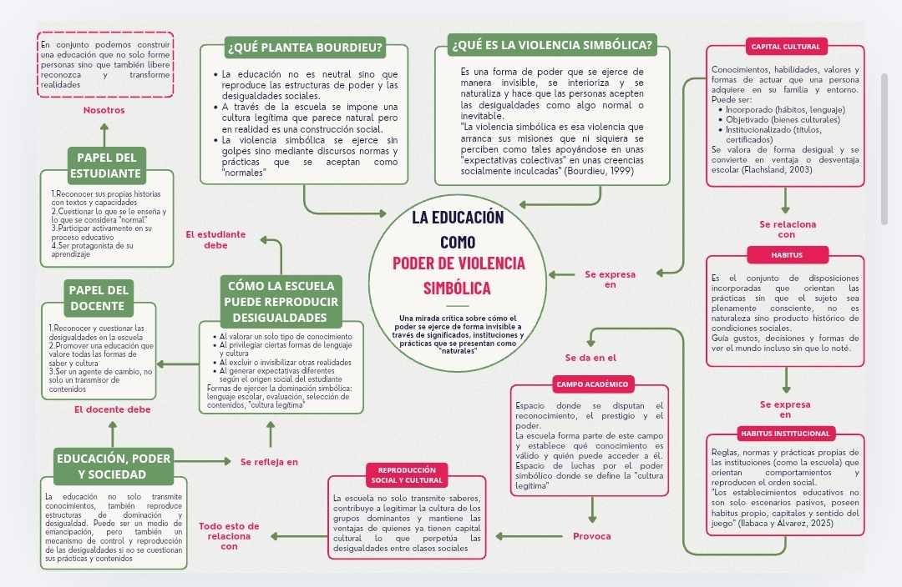

Unidad II
Educación como poder de violencia simbólica
En esta segunda unidad abordé el tema de la educación como poder de violencia simbólica, principalmente a partir de las aportaciones de Pierre Bourdieu. A lo largo de las actividades pude comprender que la educación no es un proceso completamente neutral, ya que dentro de la escuela también pueden presentarse relaciones de poder y formas de reproducción social y cultural. Para entender esto, trabajé conceptos como capital cultural, habitus, habitus institucional, campo académico, violencia simbólica y reproducción social y cultural, relacionándolos con la manera en que funciona la escuela y con las experiencias de los estudiantes.
En este trabajo reúno y relaciono los principales aprendizajes de la unidad mediante un mapa conceptual, buscando mostrar cómo estos conceptos se conectan entre sí y cómo pueden influir en las oportunidades y experiencias educativas. También retomo el papel del docente y del estudiante, ya que considero importante reflexionar sobre cómo desde la práctica educativa se pueden reconocer estas desigualdades y evitar reproducirlas de manera inconsciente. De esta forma, esta unidad me permitió mirar la educación desde una perspectiva más crítica y comprender que lo que sucede dentro de la escuela también está relacionado con la sociedad y con las condiciones culturales de cada persona.

Al finalizar esta unidad, comprendí que la educación va mucho más allá de transmitir conocimientos, pues también está relacionada con la cultura, las relaciones de poder y las condiciones sociales en las que se desarrolla cada estudiante. Los conceptos revisados me ayudaron a entender que aspectos como el capital cultural y el habitus influyen en la manera en que las personas se desenvuelven en la escuela, mientras que la violencia simbólica y la reproducción social y cultural permiten analizar cómo ciertas desigualdades pueden mantenerse cuando determinadas formas de conocimiento, lenguaje o comportamiento se consideran como las únicas válidas o normales.
Como futura pedagoga, considero que conocer estas ideas es importante porque me invita a cuestionar mi propia manera de entender la educación y a ser más consciente de las diferencias que existen entre los estudiantes. También me hace pensar en la responsabilidad que tiene el docente de no limitarse a transmitir contenidos, sino de reconocer los diferentes contextos y capacidades de sus estudiantes. Por ello, me quedo con la idea de que la educación también puede convertirse en un espacio para cuestionar, reflexionar y transformar las desigualdades, y que mi formación como pedagoga debe ayudarme a construir prácticas educativas más conscientes, inclusivas y sensibles a la realidad de cada estudiante.